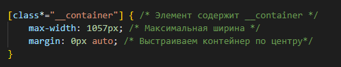

GC пошагово
Содержание:
Подготовка
Знакомство с макетом
Сегодня мы будем верстать несложный макет с подробным объяснением действий. Макет рассчитан на начинающих, то есть без java скрипта. Сайт посвящен здоровью.
Для начала скачиваем файл макета с расширением .fig в редакторе Figma.
Далее открываем редактор Figma и загружаем наш файл через нажатие кнопки "Import file" справа сверху.
Что у нас есть?
Простенькая шапка
Несколько блоков
Часто повторяющийся декор
Также мы попробуем разместить видео
И, собственно, здесь у нас есть карточки
Одним словом макет идеальный для новичков - вроде простой, но есть над чем поработать.
Файлы проекта
У нас есть папка, которая называется по названию проекта - GoCorona. Внутри ещё одна папка с самой версткой - рабочая папка проекта GoCorona.
Рядом с папкой верстки могут лежать какие-то дополнительные папки и файлы. Например, info, где бы я мог записать там какие-то данные заказчика, бюджет, исходники например и все прочее.
В рабочей папке с версткой GoCorona находится самая элементарная структура папок и файлов - файл index.html, папка css с файлом style.css, папка img для изображений. Т.к. мы рассматриваем сборку макета для начинающих, то никаких других папок, вроде java script, нам больше не понадобится.
Обнуление стилей
В файле css зададим для стилей самое минимальное обнуление по отступам, по стилям, по заголовкам и т.д.
Плагины проекта
eCSStractor for VSCode - будет копировать классы из html в css.
Поскольку у нас нет ни сборщиков и ничего подобного, то у меня установлен Live Server, который будет обновлять автоматически страницу и я смогу видеть результат в браузере сразу.
Анализ макета
С чего начинается верстка? Цена работы
Любая верстка начинается с анализа. Анализ очень важен.
В принципе, анализ макета он происходит еще на этапе, когда мы оцениваем заказ. Да, нам присылают макет дизайна и ждут нас какую-то оценку по стоимости, по срокам. И в этот момент для того, чтобы адекватно оценить работу да и свои, собственно, силы и возможности, мы должны поверхностно проанализировать макет.
Очень многие спрашивают: "А сколько стоит такая работа?", "А сколько времени на это уходит?" и так далее.
Значит, когда вам прислали макет и вы его анализируете, на цену влияет не столько объем, т.е. количество страниц и т.д., сколько наличие очень-очень мелких элементов.
А мелкие элементы заставляют нас сидеть дольше - надо с этим всем работать и работать более скурпулезно. Имейте это ввиду. Это сразу такой моментальный триггер для вас должен быть о том, что здесь вам потратить время.
А, вот крупные большие объекты - они большие и, сверстав их, вы верстаете уже почти целый экран. И не нужно бояться объема, в целом, нужно смотреть на мелкие и крупные элементы. И, естественно, если мы говорим о каких-то более сложных макетах, то смотреть на интерактив, т.е. на наличие функционала java script, который тоже повышает стоимость и сроки.
Далее, на что стоит обращать внимание при оценивании макета и своих сил, это на адекватность конструкций. Грубо говоря, насколько дизайнер решил повыпендриваться и сделал конструкции, над которыми придется, мягко говоря, попотеть.
Допустим, это стандартная схема из каких-то конструктивных элементов, которые, так скажем, прогинаются или сделаны по какой-то сетки или как-то упорядочены - с этим проблем у нас не возникнет.
Но, бывают ситуации, когда все совершенно никак не связано друг с другом и набросано, фактически, как-будто дизайнер рисовал не сайт, а картину в галерею куда-то повесить.
На это тоже обращайте внимание, когда вы пытаетесь что-нибудь оценить. И вот такие вещи, нестандартные какие-то, не структурные, они займут у вас опять же время и потребует больших знаний. Поэтому, на это тоже обращайте внимание. Эти советы вам помогут для более адекватной оценки.
Анализ макета. Плагин для Figma Font Fascia
Продолжаем. Я начал с того, что нужно анализировать макет даже на этапе оценки и, собственно, когда мы получили этот заказ и начинаем работу.
Возвращаемся опять к анализу, только уже к более глубокому. Любая верстка начинается с нескольких пунктов. Первым делом мы должны понять. какие шрифты использовал дизайнер для того, чтобы этот макет реализовать.
В сервисе Figma присутствует такой плагин Font Fascia. Находится он в меню в разделе "plugins". Если его у вас тут нет, то вы можете установить его, нажав "Browse plugins in Community" в том же меню на пару строк ниже. Откроется отдельная страница с поиском, введете туда "Font Fascia" и нажмете установить.
У меня плагин установлен, я его прожимаю и он мне тут же показывает список font-family, список семей шрифтов, которые дизайнер использовал.
И этот список тоже требует некой модерации, некоего анализа - нам не нужно верить на слово этому плагину. Точнее, он говорит правду, но я сейчас объясню. Нам нужно смотреть, действительно ли этот шрифт используется в макете.
Я выбираю первый шрифт "Rubik Bold" и прощелкиваю его по макету и понимаю, что он активно в макете используется - значит он нам нужен. Дальше "Rubik Regular" то же самое - обычный текст, активно используется.
Дальше "Raleway ExtraBold". Тут у меня есть сомнения - я смотрю что этим семейством шрифтом написаны всего несколько строк текста на кнопках. Также "Raleway Bold", которым реализовано меню и все.
Я вам сразу расскажу, почему здесь проблема. Из-за пару строк текста, потому что меню четыре строчки и четыре кнопки - это очень мало. Но, дизайнер использовал целое семейство шрифта еще и 2 начертания. Я могу сказать, что дизайнер не очень хороший, потому что он не подумал про оптимизацию и мы нам сейчас придется тянуть целое семейство шрифтов в 2-х начертаниях из-за пару строк текста.
Да, мы это сделаем и подключим. Но, имейте в виду, что если у вас какой-то заказ боевой и вы у вас есть контакт с заказчиком, с дизайнером, то в таких ситуациях стоит обратить на это внимание. Возможно, этот шрифт здесь не критичен и его смогут поменять на уже использованный "Rubik" и сайт станет быстрее. То есть, с заказчиком вы должны это проговаривать. И это покажет ваше мастерство, ваш скилл и, соответственно, вы себя зарекомендуете, как участливый специалист, который думает о заказчике, о его проекте, об оптимизации. Поэтому, шрифты стоит анализировать и общаться с работодателем, дизайнером по этому поводу.
Поиск и подключение шрифтов.
Плагин для Visual Studio Google Fonts
Итак, у нас есть список шрифтов - это два семейства "Rubik" и "Raleway". Мы будем пробовать искать их в Google fonts. Если их там не будет - мы будем их качать, конвертировать и подключать. Поскольку мы не работаем со сборщиками, которые делают это все за нас, мы будем все это делать вручную, если нам придется.
Окей, со шрифтами список ясен, давайте сходим на Google fonts и поищем эти шрифты. Значит первое семейство "Rubik", нам нужны два начертания - Bold и Regular. Выбираем их и таким образом, выбирая "link" или "@import" для подключения, мы выбираем способ подключения шрифта из Google fonts.
Но, еще проще вариант, как это сделать прямо из VS Code. Для этого существует плагин, который так и называется Google fonts. Нам нужно сделать его вызов, нажав F1. И опять же, у нас тут есть выбор мы можем импортировать шрифт в css либо мы можем подключить в html.
Давайте подключим в html для разнообразия, потому что обычно я подключаю в css. Значит, Google fonts insert link и здесь у нас список со всей базой шрифтов на Google fonts. Мы ищем "Rubik", прожимаем его и у нас появляется строка подключения длинная-длинная. Почему? Потому что здесь подключены все варианты начертания. Естественно, мы оставляем только Bold и Regular, которые дизайнер использовал в макете. Также, оставляем в конце строки флаг &display=swap. Это позволит нашим шрифтам грузится более оптимизировано. Cоответственно, вот оно наше подключение. Как хотите - используйте плагин VS Code, хотите подключайте с Google fonts.
Отлично, значит, "Rubik" у нас подключен, теперь попробуем то же самое провернуть со вторым шрифтом "Raleway". Попытаем счастья на Google fonts - делаем ту жу самую схему. Отлично, он есть на Google fonts, а значит нам не придется ничего конвертировать и мы сэкономим кучу времени.
Итак, шрифты подключены к нашей страничке и следующим шагом нужно понять, какой шрифт у нас по умолчанию. В принципе, тут уже и так все понятно, поскольку "Raleway" используется всего в нескольких местах, соответственно "Rubik", в частности Regular, это наш шрифт по умолчанию - им написаны текстовые блоки и мы делаем вывод, что его нужно ставить по умолчанию.
Это мы и сделаем - скопируем имя шрифта "Rubik", перейдем в наш css и для body зададим font-family: Rubik;
Далее, нам нужно понять какой размер шрифта по умолчанию. Для этого я пробегусь по текстовым полям и посмотрю каким размером шрифта тут написано. И я вижу, что в большинстве текстовых областей этот размер 12 пикселей. В браузере размер шрифта по умолчанию 16 пикселей. Поскольку у нас размер шрифта по умолчанию другой, отличается от 16 пикселей. Мы его указывают для body, как font-size: 12px;
Последнее, что нам нужно сделать касательно шрифтов, напоминаю мы сейчас все еще готовимся к верстке, все еще подготовительные работы, это посмотреть цвет шрифта по умолчанию. Копирую код цвета и добавляю для body.
Окей, со шрифтами мы закончили и можем переходить ко второй части подготовительных работ - это построение сетки, работа с адаптивом и настройка ограничивающего контейнера.
Построение сетки
Ограничивающий контейнер
Как, правило дизайнеры не устанавливают здесь направляющие линии, но можно попробовать, нажав на название полотна Landing Page, в данном случае оно называется, включить сетку, если она использована, нажав layout grid. Здесь мы можем добавить какую-то свою сетку, не ту которую использовал дизайнер, точнее он должен был это сделать.
Видим, сетки нет и это хорошо, потому что такова жизнь и не всегда она будет вам помогать. Так что, давайте будем учиться строить свои направляющие, чтобы облегчить себе работу уже с анализом отдельных блоков.
Cейчас важный момент и об этом очень мало кто говорит. Что первым делом нужно разглядеть в макете? В макете нужно отделить полотно от контента, от ограничивающего контент контейнера.
Что такое полотно? Полотно - это вся ширина макета. Она может быть абсолютно разная. В данном случае, это 1152 пикселя. Почему-то так решил дизайнер.
Обычно полотна в 1920 пикселей, 1170, 1440 - это такие плюс-минус стандартные ширины. Здесь совершенно другое и это хорошо, потому что это демонстрирует, что полотно может быть абсолютно любым и это полотно оно должно расширятся на всю ширину устройства, в котором открыт сайт. И, вот это значение 1152 пикселя мы ни в коем случае не должны как-то ограничивать. Этим значением 1152 пикселей и есть весь сайт. А то, что контент, вот с этим нам нужно будет уже работать. Это и будет нашим ограничивающим контейнером и это поможет нам работать с адаптивом.
Мы четко видим, мы можем визуально прочертить такую линию, что все контентные элементы отступают от края полотна слева и справа на определенное значение. Поэтому, чтобы было проще, мы включаем вот такую сетку в меню View - Rulers
Появится активная линейка и мы можем мышкой поймать здесь край, подтянуть и получим линию, которую можем ставить, чтобы не визуально как-то сопровождать весь контент, а делать это с помощью линии - так намного проще.
Давайте попробуем по шапке сначала эти линии расставить. Я ставлю их на край логотипа и кнопки и смотрим, что у нас получается. Мы видим мы видим, что дизайнер решил не следовать никаким сеткам и в шапке у него объект находится на одном удалении от края, а в других блоках совсем на другом удаления от края.
Чтобы узнать отступы от ближайших элементов? нужно выделить элемент и зажать Alt, далее навести курсор на соседний элемент. Так и сделаем, выделим объект с правой стороны, зажмем Alt и наведем курсор на правую линию - здесь у нас 28 пикселей. С левой стороны - 40 пикселей.
Мы, как раз, имеем дело с тем, что придется танцевать с бубном и всячески здесь устраивать свистопляски для того, чтобы как-то соответствовать макету и при этом привести все к какому-то какому-то логическому действию.
Я даже рад, что вот так у нас все плохо в макете, потому что такова жизнь и идеальные макеты вы будете видеть редко. Поэтому давайте как-то исходить из ситуации - что мы можем с этим сделать?
Во-первых, мы можем немножечко отступить от макета и все-таки следовать какому-то зову разума и привести весь контент к какому-то общему знаменателю в плане ширины. А можем соответствовать макету и пилить под каждый блок соответствующие размеры.
Но, вы видите, что даже подобный текстовый блок в первом секторе и в третьем секторе имеет совершенно разные отступы. То есть, это реально сделано тяп-ляп и нам приходится вот с этим жить.
И, почему я говорю о разных вариантах? Потому что, в принципе, вы можете на себя взять некую ответственность, как мастер по верстке, для того, чтобы привести все к какому божескому виду, чтобы потом уже пользователю сайта было удобней получать информацию с этого макета. Потому что, если мы немножко уйдем в удобства пользования UX/UI, если пользователю на каждом блоке придется привыкать к разному расположению объектов, то ему будет сложнее воспринимать информацию, чем когда он открыл сайт, привык к его сущности и дальше он получает информацию уже по узнаваемым, так скажем, паттернам.
Здесь у нас все не так! Тоже имейте ввиду, что где-то вы можете этот момент с дизайнером, заказчиком обговорить и там уже принять решение: точное соответствие макету со всеми его проблемами либо же мы где-то что-то начинаем улучшать самостоятельно.
В данном случае я все-таки постараюсь следовать макету. У нас выбора особо нет - менять макет я сейчас не собираюсь и поэтому так и оставим. То есть, у нас будет ограничивающий контейнер, который я сейчас обозначил по шапке, а далее мы уже будем в каждый сектор подбирать те отступы, которые нам даны.
Что нам нужно сделать - это померить расстояние между двумя этими линиями. Почему-то при клике на одну линию и зажатым Alt на другую линию Figma нам не показывает размер. В таких случаях я использую инструмент - зажимаю клавишу F, просто черчу прямоугольник и тут снизу у меня размер будет показан: это 1057 пикселей.
Применение селектора-атрибута
Теперь мы построим ограничивающий контейнер. Но построим его с помощью селектора-атрибута [attribute*="value"]
Можно и обычным селектором .container создать ограничивающий контейнер, задав блоку class="container". Но, мы будем развивать свои навыки и стараться использовать разные приемы. Этот макет мы будем верстать профессионально по методологии БЭМ - Блок, Элемент, Модификатор. В этом случае мы сначала определяем типовые блоки, а уже в них будем выделять элементы с классом "container"
Селектор [attribute*="value"] позволяет выбрать элементы, у которых значение атрибута содержит указанный текст. При этом текст может быть в начале, в середине или в конце.
Наша запись означает, что к любому объекту с атрибутом class, у которого содержится вот такая строка "__container", будут применены вот такие стили:

Здесь я обратился ко всем объектам в классе которых встречается вот такая вот строка. Соответственно, в объектах я буду использовать класс, в котором есть такая строка, где мне нужен ограничивающий контейнер. Лучше создать один раз типовой блок, чем писать тридцать пять одинаковых классов.
- max-width
- Устанавливает максимальную ширину элемента.
- margin
- Устанавливает величину отступа от каждого края элемента. Отступом является пространство от границы текущего элемента до внутренней границы его родительского элемента
- 0 Убираем отступы
- auto Указывает, что размер отступов будет автоматически рассчитан браузером.
Движемся дальше и будем обращаться уже к отдельным блокам. Естественно, мы будем начинать с шапки.